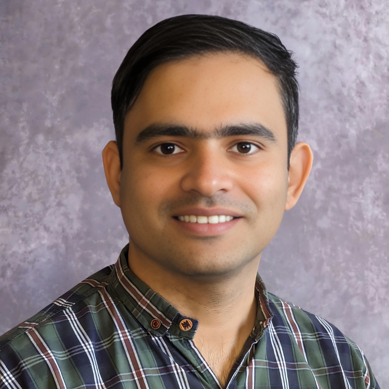

I am an Embedded Software Engineer and Ph.D. researcher specializing in Cyber Security for Embedded Systems. My current research investigates Physical Layer Characteristics to create unclonable fingerprints for device authentication.
Professional Experience
Embedded System Software Engineer
Lester Electrical of Nebraska Inc.
Oct 2024 — Present
Lincoln, Nebraska, United States
Graduate Research Assistant
University of Nebraska-Lincoln
Aug 2021 — Present
Lincoln, Nebraska, United States
FPGA Design Engineer
Vincente Technologies
Jan 2021 — Aug 2021
Lahore, Pakistan
FPGA Design Engineer
NRTC
Jun 2018 — Jan 2021
Haripur, Pakistan
Research Assistant
LUMS (Lahore University of Management Sciences)
Jul 2015 — Jun 2018
Lahore, Pakistan
Education
Ph.D., Computer Engineering
🇺🇸GHOST Lab, University of Nebraska-Lincoln
2020 — 2025
Dissertation: Utilizing Physical Layer Characteristics for Internet of Things (IoT) Security
MS, Electrical and Computer Engineering
🇵🇰Embedded Systems Lab, LUMS (Lahore University of Management Sciences)
2015 — 2017
BS, Electrical Engineering
🇵🇰 NUCES (National University of Computer and Emerging Sciences)
2011 — 2015
Selected Publications
Full Profile
Leveraging AI to Compromise IoT Device Privacy by Exploiting Hardware Imperfections
Read Paper
IEEE Transactions on Artificial Intelligence
2025
"Data Provenance for IoT Devices by Exploiting Clock Variations"
Read Paper
IEEE Conference on Dependable and Secure Computing (DSC)
2023
Exploiting Hardware Imperfections for GPS Spoofing Detection using clock variations
Read Paper
IEEE Physical Assurance and Inspection of Electronics (PAINE)
2023
Hardware Fingerprinting of Phasor Measurement Units for Data Provenance
Read Paper
IEEE Power & Energy Society Innovative Smart Grid Technologies Conference (ISGT)
2023
An Optimized Hardware/Software Co-Design Framework for Real-Time Pedestrian Detection
Read Paper
International Conference on Electrical, Communication, and Computer Engineering (ICECCE)
2020